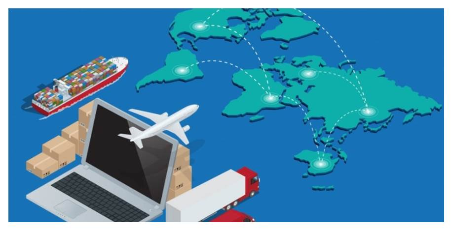

해상 무역거래조건
인코텀즈란?
FAS
FOB
CFR
CIF
FOB, CFR, CIF 비교

인코텀즈(INCOTERMS)의 정의
거래 당사자의 권리와 의무를 국제적으로 통일시킨
자율적 경제 규칙.
인코텀즈의 목적
모든 비용에 대한 매수인과 매도인의 의무를 구분하여 무역 거래상의 분쟁 요소를 제거시킴
국제 무역 확대 도모 (원활한 무역거래 진행)
인코텀즈 분기점
비용, 인도, 위험 사진, 효과 넣기
2020년 개편된 인코텀즈